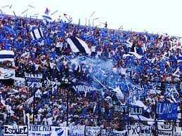

La Hinchada de Quilmes
Noelia Tappata 3/11/2023
La hinchada de Quilmes es llamada “Indios Kilmes”, en conmemoración a la tribu que originalmente habitaba el Valle Calchaquí (en las provincias de Tucumán y Catamarca) y que fue reubicada en donde actualmente están las ciudades de Quilmes y Bernal. Esta etnia se enfrentó a los colonizadores españoles. Una vez vencidos, luego de la quema de sus cultivos, fueron obligados a abandonar sus tierras y realizar un éxodo hasta las llanuras rioplatenses donde se asentaron y se asimilaron al resto de la población dando fin a su cultura.
Su hinchada siempre se ha caracterizado por sus grandes movilizaciones, como las que se realizaron en las finales por el ascenso, o en la participación internacionales del club en la Copa Sudamericana de 2004, debutando en dicho certamen; y en su vuelta a la Copa Libertadores en el año 2005.